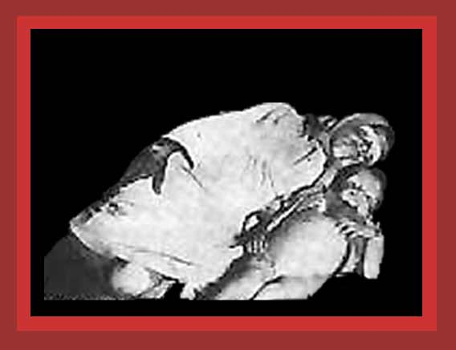

| Lenin's rapacious agricultural policies 1918-1923 created a famine that killed by starvation and associated diseases about 7,300,000 people. Half of these victims comprise democide, the other half are the unintentional victims of failed policies. Here is a photo of two of the victims, a mother and her child. For documentation, see Lethal Politics. Source: my record has it at Museum of Communism, but now can't find it there. |